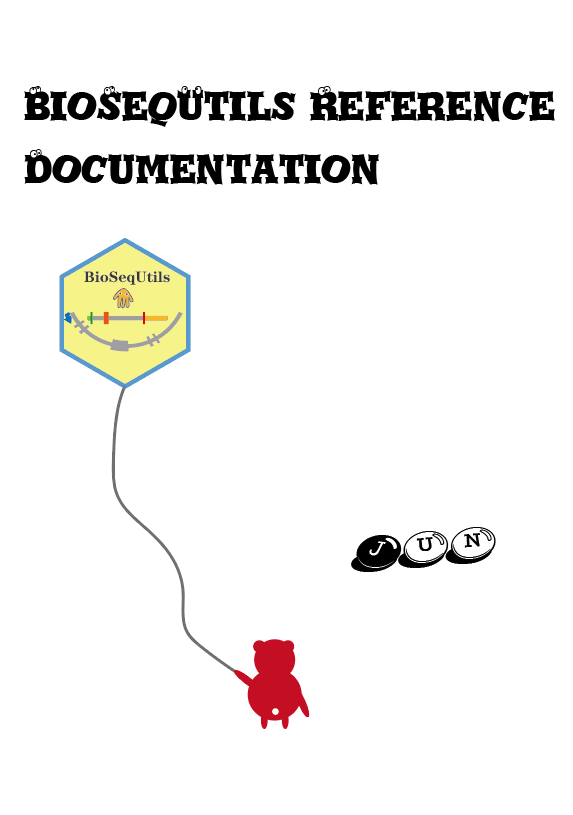

1 About
BioSeqUtils package supply some useful functions to do some things more efficiently which generated in my work process. I collect them in this package and share with you. If you have any question or suggestion, please leave your word on github issues. Maybe this package looks like a functions hodgepodge, anyway it at least makes you better at some aspects.
Citation: Jun Zhang (2023). BioSeqUtils: Extract Sequence from Genome According to Annotation File. https://github.com/junjunlab/BioSeqUtils
You can install the development version of BioSeqUtils like so:
# install.packages("devtools")
devtools::install_github("junjunlab/BioSeqUtils")
library(BioSeqUtils)